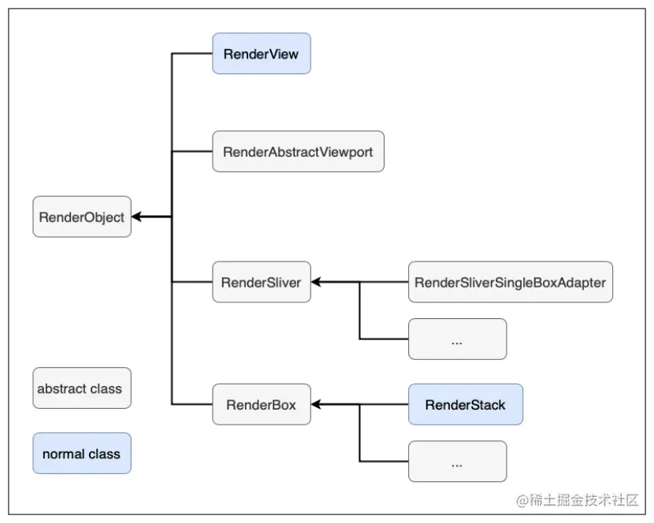

1. 前言
Flutter中，RenderObject的主要职责是布局和绘制。通过上篇文章介绍的Element Tree，Flutter Framework会生成一棵RenderObject Tree. 其主要功能如下：
- 布局，从
RenderBox开始，对RenderObject Tree从上至下进行布局。 - 绘制，通过
Canvas对象，RenderObject可以绘制自身以及其在RenderObject Tree中的子节点。 - 点击测试，
RenderObject从上至下传递点击事件，并通过其位置和behavior来控制是否响应点击事件。
RenderObject Tree是底层的布局和绘制系统。大多数Flutter开发者并不需要直接和RenderObject Tree交互，而是使用Widget，然后Flutter Framework会自动构建RenderObject Tree。
RenderObject拥有一个parent和一个ParentData插槽（Slot），所谓插槽，就是指预留的一个接口或位置，这个接口和位置是由其它对象来接入或占据的，这个接口或位置在软件中通常用预留变量来表示，而ParentData正是一个预留变量，它正是由parent来赋值的，parent通常会通过子RenderObject的ParentData存储一些和子元素相关的数据，如在Stack布局中，RenderStack就会将子元素的偏移数据存储在子元素的ParentData中（具体可以查看Positioned实现）。
2. RenderObject分类

如上图所示，RenderObject主要分为四类：
- RenderView
RenderView是整个RenderObject Tree的根节点，代表了整个输出界面。 - RenderAbstractViewport
RenderAbstractViewport是一类接口，此类接口为只展示其部分内容的RenderObject设计。 - RenderSliver
RenderSliver是所有实现了滑动效果的RenderObject基类，其常用子类有RenderSliverSingleBoxAdapter等。 - RenderBox
RenderBox是一个采用2D笛卡尔坐标系的RenderObject的基类，一般的RenderOBject都是继承自RenderBox，例如RenderStack等，它也是一般自定义RenderObject的基类。
3. 核心流程
RenderObject主要负责布局，绘制，及命中测试，下面会对这几个核心流程分别进行讲解。
- 布局 布局对应的函数是
layout，该函数主要作用是通过上级节点传过来的Constraints和parentUsesSize等控制参数，对本节点和其子节点进行布局。Constraints是对于节点布局的约束，其原则是，Constraints向下，Sizes向上，父节点设置本节点的位置。即：- 一个
Widget从它的父节点获取Constraints，并将其传递给子节点。 - 该
Widget对其子节点进行布局。 - 最终，该节点告诉其父节点它的
Sizes。
- 一个
当本节点的布局依赖于其子节点的布局时，parentUsesSize的值是true，此时，子节点被标记为需要布局时，本节点也将被标记为需要布局。这样当下一帧绘制时本节点和子节点都将被重新布局。反之，如果parentUsesSize的值是false，子节点被重新布局时不需要通知本节点。
RenderObject的子类不应该直接重写RenderObject的layout函数，而是重写performResize和performLayout函数，这两个函数才是真正负责具体布局的函数。
RenderObject中layout函数的源码如下：
void layout(Constraints constraints, { bool parentUsesSize = false }) {
//1. 根据relayoutBoundary判断是否需要重新布局
RenderObject relayoutBoundary;
if (!parentUsesSize || sizedByParent || constraints.isTight || parent is! RenderObject) {
relayoutBoundary = this;
} else {
relayoutBoundary = (parent as RenderObject)._relayoutBoundary;
}
if (!_needsLayout && constraints == _constraints && relayoutBoundary == _relayoutBoundary) {
return;
}
_constraints = constraints;
//2. 更新子节点的relayout boundary
if (_relayoutBoundary != null && relayoutBoundary != _relayoutBoundary) {
// The local relayout boundary has changed, must notify children in case
// they also need updating. Otherwise, they will be confused about what
// their actual relayout boundary is later.
visitChildren(_cleanChildRelayoutBoundary);
}
_relayoutBoundary = relayoutBoundary;
//3. 重新计算大小，重新布局
if (sizedByParent) {
try {
performResize();
} catch (e, stack) {
_debugReportException('performResize', e, stack);
}
}
try {
performLayout();
markNeedsSemanticsUpdate();
} catch (e, stack) {
_debugReportException('performLayout', e, stack);
}
_needsLayout = false;
markNeedsPaint();
}
从源码可以看到，relayoutBoundary是layout函数中一个重要参数。当一个组件的大小被改变时，其parent的大小可能也会被影响，因此需要通知其父节点。如果这样迭代上去，需要通知整棵RenderObject Tree重新布局，必然会影响布局效率。因此，Flutter通过relayoutBoundary将RenderObject Tree分段，如果遇到了relayoutBoundary，则不去通知其父节点重新布局，因为其大小不会影响父节点的大小。这样就只需要对RenderObject Tree中的一段重新布局，提高了布局效率。关于relayoutBoundary将在之后的文章中详细讲解，目前只需要了解relayoutBoundary会将RenderObject Tree分段，提高布局效率。
- 绘制
绘制对应的函数是paint，其主要作用是将本RenderObject和子RenderObject绘制在Canvas上。RenderObject的子类应该重写这个函数，在该函数中添加绘制的逻辑。
RenderObject的子类RenderFlex的paint函数源码如下：
void paint(PaintingContext context, Offset offset) {
//1. 未溢出，直接绘制
if (!_hasOverflow) {
defaultPaint(context, offset);
return;
}
//2. 空的，不需要绘制
// There's no point in drawing the children if we're empty.
if (size.isEmpty)
return;
//3. 根据clipBehavior判断是否需要对溢出边界部分进行裁剪
if (clipBehavior == Clip.none) {
defaultPaint(context, offset);
} else {
// We have overflow and the clipBehavior isn't none. Clip it.
context.pushClipRect(needsCompositing, offset, Offset.zero & size, defaultPaint, clipBehavior: clipBehavior);
}
//4. 绘制溢出错误提示
assert(() {
// Only set this if it's null to save work. It gets reset to null if the
// _direction changes.
final List<DiagnosticsNode> debugOverflowHints = <DiagnosticsNode>[
ErrorDescription(
'The overflowing $runtimeType has an orientation of $_direction.'
),
ErrorDescription(
'The edge of the $runtimeType that is overflowing has been marked '
'in the rendering with a yellow and black striped pattern. This is '
'usually caused by the contents being too big for the $runtimeType.'
),
ErrorHint(
'Consider applying a flex factor (e.g. using an Expanded widget) to '
'force the children of the $runtimeType to fit within the available '
'space instead of being sized to their natural size.'
),
ErrorHint(
'This is considered an error condition because it indicates that there '
'is content that cannot be seen. If the content is legitimately bigger '
'than the available space, consider clipping it with a ClipRect widget '
'before putting it in the flex, or using a scrollable container rather '
'than a Flex, like a ListView.'
),
];
// Simulate a child rect that overflows by the right amount. This child
// rect is never used for drawing, just for determining the overflow
// location and amount.
Rect overflowChildRect;
switch (_direction) {
case Axis.horizontal:
overflowChildRect = Rect.fromLTWH(0.0, 0.0, size.width + _overflow, 0.0);
break;
case Axis.vertical:
overflowChildRect = Rect.fromLTWH(0.0, 0.0, 0.0, size.height + _overflow);
break;
}
paintOverflowIndicator(context, offset, Offset.zero & size, overflowChildRect, overflowHints: debugOverflowHints);
return true;
}());
}
这部分代码逻辑为，先判断是否溢出，没有溢出则调用defaultPaint完成绘制，再看是否为空，size是空的话直接返回，最后绘制溢出信息。
其中defaultPaint的源码如下：
void defaultPaint(PaintingContext context, Offset offset) {
ChildType child = firstChild;
while (child != null) {
final ParentDataType childParentData = child.parentData as ParentDataType;
context.paintChild(child, childParentData.offset + offset);
child = childParentData.nextSibling;
}
}
可见defaultPaint会调用paintChild绘制子节点，而如果子节点还有子节点，则paintChild最终又会调用到其paint然后调用到defaultPaint，从而形成循环递归调用，绘制整棵RenderObject Tree。
- 命中测试
命中测试是为了判断某个组件是否需要响应一个点击事件，其入口是RenderObject Tree的根节点RenderView的hitTest函数。下面是该函数的源码：
bool hitTest(HitTestResult result, { Offset position }) {
if (child != null)
child.hitTest(BoxHitTestResult.wrap(result), position: position);
result.add(HitTestEntry(this));
return true;
}
从RenderView的构造函数可以看出，child是RenderBox类，因此我们再看RenderBox的hitTest函数。
bool hitTest(BoxHitTestResult result, { @required Offset position }) {
if (_size.contains(position)) {
if (hitTestChildren(result, position: position) || hitTestSelf(position)) {
result.add(BoxHitTestEntry(this, position));
return true;
}
}
return false;
}
代码逻辑很简单，如果点击事件位置处于RenderObject之内，如果在其内，并且hitTestSelf或者hitTestChildren返回true，则表示该RenderObject通过了命中测试，需要响应事件，此时需要将被点击的RenderObject加入BoxHitTestResult列表，同时点击事件不再向下传递。否则认为没有通过命中测试，事件继续向下传递。其中，hitTestSelf函数表示本节点是否通过命中测试，hitTestChildren表示子节点是否通过命中测试。
4. 核心函数
RenderObject的核心函数有很多，难以一一列举，在核心流程中已经详细讲解了RenderObject三个核心函数。为了便于理解各个核心函数的作用，这里将RenderObject的核心函数和Android View的核心函数进行比较。以下是比较的表格。
| 作用 | Flutter RenderObject | Android View |
|---|---|---|
| 绘制 | paint() | draw()/onDraw() |
| 布局 | performLayout()/layout() | measure()/onMeasure(), layout()/onLayout() |
| 布局约束 | Constraints | MeasureSpec |
| 布局协议1 | performLayout() 的 Constraints 参数表示父节点对子节点的布局限制 | measure() 的两个参数表示父节点对子节点的布局限制 |
| 布局协议2 | performLayout() 应调用各子节点的 layout() | onLayout() 应调用各子节点的 layout() |
| 布局参数 | parentData | mLayoutParams |
| 请求布局 | markNeedsLayout() | requestLayout() |
| 请求绘制 | markNeedsPaint() | invalidate() |
| 添加 child | adoptChild() | addView() |
| 移除 child | dropChild() | removeView() |
| 关联到窗口/树 | attach() | onAttachedToWindow() |
| 从窗口/树取消关联 | detach() | onDetachedFromWindow() |
| 获取 parent | parent | getParent() |
| 触摸事件 | hitTest() | onTouch() |
| 用户输入事件 | handleEvent() | onKey() |
| 旋转事件 | rotate() | onConfigurationChanged() |
可见，RenderObject和Android View有很多函数是对应起来的，RenderObject相对于将Android View中的布局渲染等功能单独拆了出来，简化了View的逻辑。
5. 小结
本文主要介绍了RenderObject相关知识，重点介绍了其分类，核心流程，和核心函数。重点如下：
RenderObject主要负责绘制，布局，命中测试等。RenderObject布局的原则是，Constraints向下，Sizes向上，父节点设置本节点的位置。RenderView是整个RenderObject Tree的根节点，其child是一个RenderBox类型的RenderObject。